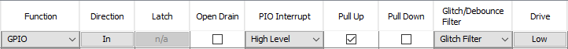

1.1.4.3 Configuring The Library
RF215 Driver Configuration
RF215 Driver library is configured via MCC. Below is the Snapshot of the MCC configuration window for RF215 driver and brief description.
RF Device Used:
Selects the AT86RF215 part number used.
RF215 and RF215M are supported. RF215Q is not supported.
RF215M only supports the Sub-GHz transceiver.
Number of clients:
Specifies the maximum number of clients for the RF215 driver.
If dual-band is used, each client can only use a single transceiver.
Number of TX Buffers:
Specifies the number of transmission buffers (shared for all clients).
If dual-band is used, the number of buffers are shared for both transceivers.
It can be modified only if PHY TX/RX time support is enabled (otherwise only instantaneous transmission enabled).
Automatic FCS (Frame Check Sequence):
If enabled:
In transmission, the FCS is automatically appended to the PSDU.
In reception, the FCS is automatically checked and result reported in RX indication.
802.15.4 32-bit and 16-bit FCS are supported.
Maximum PSDU data length:
Specifies the maximum PSDU length for transmission and reception.
If Automatic FCS is enabled, the PSDU length includes the FCS length.
PHY TX/RX time support:
If enabled:
It is possible to schedule transmissions for a specific time instant.
The reception time is reported in RX indication.
CCA Contention Window support:
If enabled, 802.15.4 CCA (Clear Channel Assessment) Contention Window is supported.
Multiple CCA before transmission to detect the channel as clear.
Frequency hopping support:
If enabled, frequency channel is TX parameter and there is a function to schedule frequency channel switch for a specified time.
Max. TX time delay error (us):
Specifies the maximum TX time delay error allowed, in microseconds.
If it is not possible to comply with this requirement, the RF215 driver will report timeout error.
PLIB Used:
Indicates the SPI peripheral instance used by the RF215 driver.
The name of the peripheral will vary from MCU to MCU.
DMA Channel For Transmit:
Indicates the DMA channel used by the RF215 driver for SPI transmission.
It is Only visible if the MCU has DMA.
DMA Channel For Receive:
Indicates the DMA channel used by the RF215 driver for SPI reception.
It is Only visible if the MCU has DMA.
SPI NPCS Used:
SPI chip select line to be used by the RF215 driver.
It is only visible if the connected peripheral supports multiple chip select lines.
External Interrupt Pin:
GPIO pin to be used as external interrupt interface (active high).
This pin indicates that the RF215 device has one or more pending events to be consulted.
- This pin must be configured as GPIO input in "Pin Settings" configuration. Set Pull Up and High Level Interrupt configuration:
Figure . External Interrupt GPIO Pin Settings 
Reset Pin:
GPIO pin to be used as reset (active low).
This pin resets the RF215 device.
This pin must be configured as GPIO output in "Pin Settings" configuration.
Use LED TX Pin:
If enabled, a GPIO pin is used to indicate RF transmissions.
LED TX Pin:
GPIO pin to be used as LED to indicate RF transmissions (active high).
This pin must be configured as GPIO output in "Pin Settings" configuration.
Use LED RX Pin:
If enabled, a GPIO pin is used to indicate RF receptions.
LED RX Pin:
GPIO pin to be used as LED to indicate RF receptions (active high).
This pin must be configured as GPIO output in "Pin Settings" configuration.
Use FSK PHY:
Enables/disables 802.15.4 SUN FSK PHY.
Use OFDM PHY:
Enables/disables 802.15.4 SUN OFDM PHY.
Use Sub-GHz Transceiver:
Enables/disables the Sub-GHz transceiver.
Default PHY Frequency Band:
Selects the default frequency band, in MHz, for the Sub-GHz transceiver.
Default PHY Type:
Selects the default PHY type (FSK/OFDM) for the Sub-GHz transceiver.
Default FSK Operating Mode:
Selects the default 802.15.4 SUN FSK operating mode for the Sub-GHz transceiver.
The available operating modes depend on the selected Default PHY Frequency Band.
Only visible if Default PHY Type is FSK.
Default OFDM Bandwidth Option:
Selects the default 802.15.4 SUN OFDM bandwidth option for the Sub-GHz transceiver.
The available bandwidth options depend on the selected Default PHY Frequency Band.
Only visible if Default PHY Type is OFDM.
Default PHY Frequency Channel Number:
Selects the default frequency channel number for the Sub-GHz transceiver.
The available channel numbers depend on the selected Default PHY Frequency Band and Default FSK Operating Mode / Default OFDM Bandwidth Option.
Use 2.4GHz Transceiver:
Enables/disables the 2.4GHz transceiver.
It is not available if RF Device Used is RF215M.
Similar default mode options than for Sub-GHz transceiver.
RTOS Settings
Stack Size (in bytes):
Specifies the number of bytes to be allocated on the stack for the driver task.
Task Priority:
Specifies priority for the driver task thread. The value can vary based on RTOS used.
SPI Peripheral Configuration
For correct operation it is important that the SPI is properly configured in MCC. If the used peripheral supports multiple chip select lines, the corresponding NPCS has to be enabled and configured.
The AT86RF215 datasheet describes in section "4.2.5 SPI Timing" the requirements of RF215 regarding SPI timing. As a summary these are the requirements:
Maximum SPI clock frequency: 25 MHz
Minimum time required between SPI chip select falling edge to SCLK rising edge: 50 ns
Minimum time required between last SCLK cycle of previous byte to first SCLK cycle of next byte: 125 ns
Minimum time required between first SCLK cycle of previous byte to first SCLK cycle of next byte: 875 ns
When SPI dependency of RF215 driver is connected to a peripheral with SPI capability, some SPI options are automatically configured. The optimal (highest) SPI baudrate is automatically computed, satisfying the requirements described above. There is not any requirement in terms of low SPI baudrate, the user can reduce it if needed. However, it is recommended to configure it as high as possible because the lower the SPI baudrate, the slower the response time.
The following snapshot shows an example of valid SPI configuration for a PIC32CXMT device:
Time Service Configuration
If PHY TX/RX time support is enabled, it is important to configure the Time Service properly:
Number of clients:
The number of clients for the Time Service should be allocated taking into account that one client is needed for each transmission buffer (Number of TX Buffers).
Operating Mode:
For accurate transmission time, it is recommended to configure the Time Service in Tickless Mode.